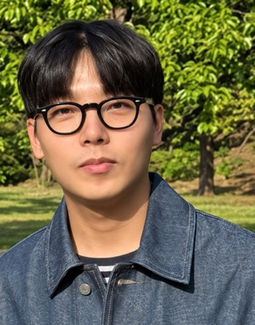

Samsung Electronics, System LSI
Internship · Modem Development Team
Efficient · Adaptive · Embodied AI
ARTLAB · KAIST School of Electrical Engineering
Graduate Researcher · Advisor: Prof. Joonhyuk Kang

Hello, I'm a Ph.D. student in Electrical Engineering at KAIST and a graduate researcher at ARTLAB, advised by Prof. Joonhyuk Kang.
My research focuses on efficient and adaptive AI systems, particularly efficient LLM inference and vision–language–action models. My work spans communication-efficient distributed inference, learned communication, and the adaptation of frozen visuomotor policies. I am currently exploring latent-space steering as a way to adapt behavior under distribution shift without full model retraining.
Joohyun Shin, Jiwan Seo, and Joonhyuk Kang
IEEE Vehicular Technology Conference (VTC)-Spring, 2026
Accepted · Oral presentationProceedings forthcomingJoohyun Shin*, Byeonghyeon Park*, Keumseo Ryum, and Joonhyuk Kang · *Equal contribution
Manuscript in preparation; arXiv preprint forthcoming.
Distributed inferenceSpeculative decodingJoonhyuk Kang, Joohyun Shin, and Jiwan Seo
Korean Patent Application No. 10-2026-0186724 · Filed September 30, 2026
Patent applicationGraduate Researcher · Advisor: Prof. Joonhyuk Kang
Investigating whether latent-space interventions can adapt frozen visuomotor policies under distribution shift, and analyzing how internal representations relate to action outputs.
Developed a distributed speculative decoding framework that avoids vocabulary-scale distribution transfer between heterogeneous devices, with communication and latency evaluation across network and hardware settings.
Developed an end-to-end framework that learns pilot placement jointly with image transmission over time- and frequency-selective channels.
Internship · Modem Development Team
KAIST School of Electrical Engineering
Research Mentor
Ph.D. Student in Electrical Engineering
M.S. in Electrical Engineering
B.S. in Electrical Engineering